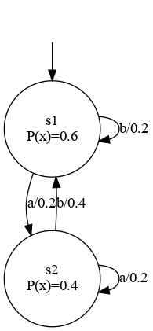
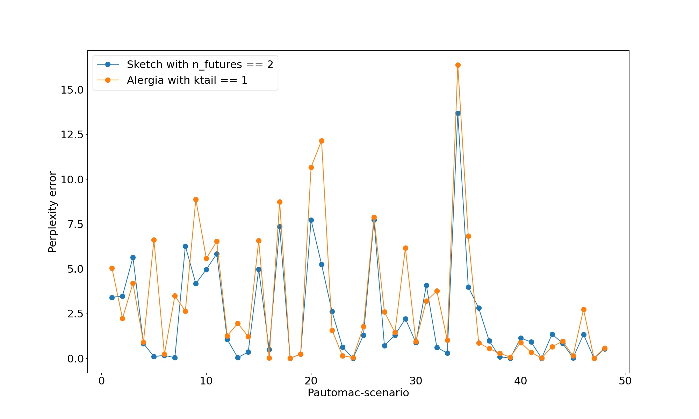
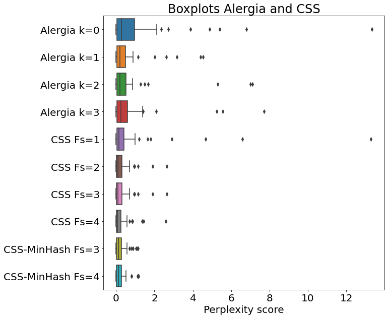
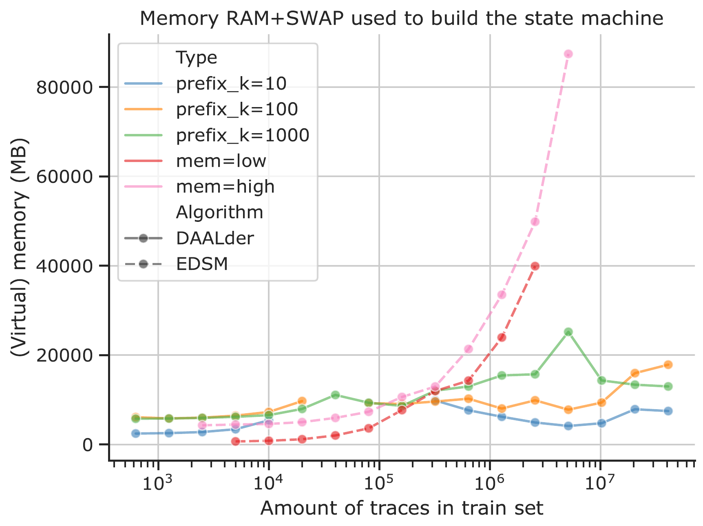
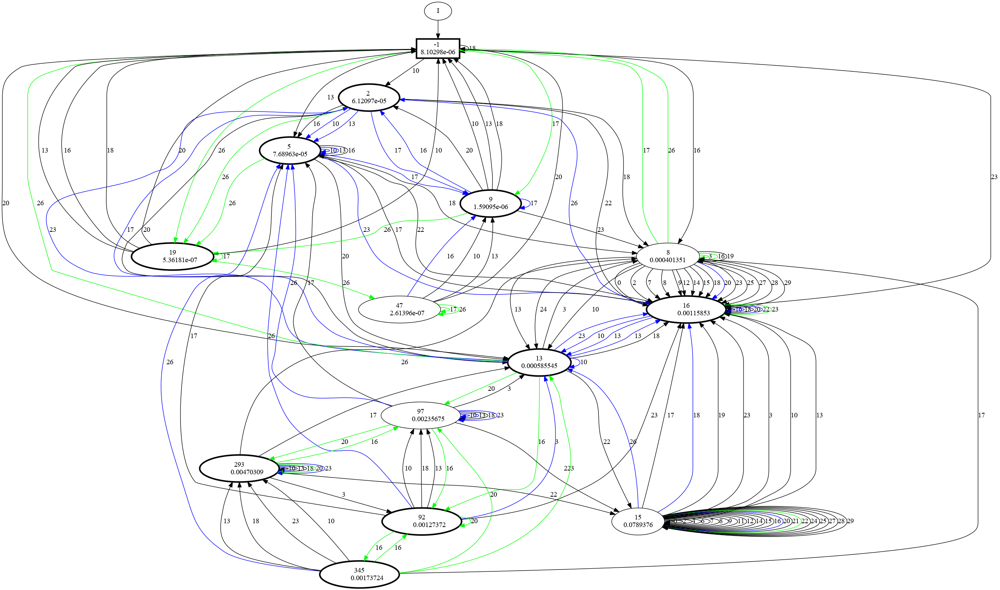
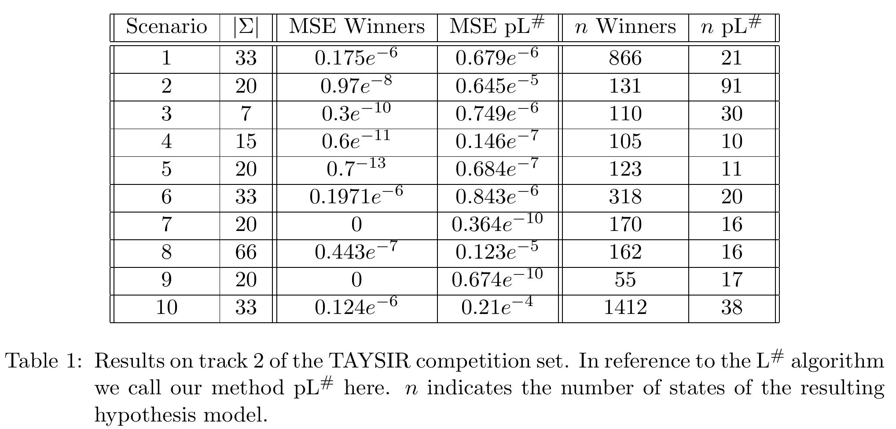

What are state machines and why use them?
In simple terms, State Machines are discrete event systems. They consist of discrete states,
transitions in between those states, and events triggering those transitions. Below is an images
of a very simple state machine, consisting of two states two simple events 'a' and 'b' triggering
the transitions. In addition to the described above the transitions are also associated with
transition probabilities, making this particular state machine a probabilistic state machine.

What can we do with state machines? State machines have many applications and can be used whereever
a discrete event system exists. The classic illustration example is a coffee machine. For instance, we can
have take the states 'No water', 'No beans', 'Ready', and 'Coffee brewing'.
Upon starting the machine it goes into default state, checking whether water is there. If not, go into
state 'No water' and display a warning. Once water is there, do the same with the beans. And only when
water and beans are there a selection is possible, marked by state 'Ready', after which we transition
into state 'Coffee brewing'. A finished and brewed coffee then triggers another check for recourses,
either landing in state 'No water', 'No beans', or 'Ready', meaning the whole cycle repeats.
Well, that example works, but it is so simple. Why would I do the work to design a state machine in first place?
Simple state machines are mostly a domain of smaller systems. For example,
controllers in embedded system design are often first modeled as a state machine before translated into
code, adding a layer of code security on critical applications. The interested learner is referred to
this excellent course. An advantage of that method is also that other techniques such as model checking can
be employed to ensure code testing. A book recommended by a former instructor is the
Principles of Model Checking.
What if I have something that is more complex than a controller? In cases where a system is too large
to be designed by hand, or where we want to understand an existing system, we have to employ automatic
algorithms to infer those state machines for us. This is called State Machine Learning, and it comes in
two flavors: Active and passive learning. In active learning, we have access to an existing
system, and we generate inputs to ask the system for its output. A downside of this method is that we need
access to the system, and we need to be able to reset it to a default state, making learning potentially very
costly. On the contrary, if we do not have access to the system, but instead already have execution traces,
such as software logs, we can use passive learning. This method of learning simple aims to
generate a state machine model from the set of execution traces that we give to the algorithm. A downside of
this method is that it is highly dependent on the quality of the existing data, and of course on its vastness.
Learning state machines via efficient hashing of future traces
R. Baumgartner, S. Verwer
Published: LearnAUT 2022, Paris, France
Link: https://learnaut22.github.io/programme.html
There are many works on learning state machines from existing data. However, few works deal with the
modern problem of learning from data streams, which arise for example in servers that should not be
interrupted, systems that generate large amounts of data, and other kinds of systems that run
day and night. To infer state machines from these kinds of systems we have to design special kinds of
algorithms, that enable the state machine learning algorithms to continuously learn and update a
model. Additionally, these kinds of algorithms need to be able to compress information if necessary,
since the data stream can be infinite at the worst.
To tackle these challenges we designed a simple algorithm, with two main ideas: The first is the
heuristic used to identify states and transitions. In order to compress information we
summarize the stream of data in the Count-Min-Sketch data structure. These summaries are then used
to find statistical patterns, subsequently used to identify the states. The second idea is a
routine that we can use to periodically output state machines. We opted for a simple routine that
periodically saves the current model, while not interrupting the learning process.
We compare our method with a well-known method to show that it is doing reasonably well, given that
it works with compressed, i.e. not full, information. Below is s figure showing partial results, for
a full description and results please refer the publication.

Learning state machines from data streams: A generic strategy and an improved heuristic
R. Baumgartner, S. Verwer
Published: International Conference for Grammatical Inference 2023, Rabat, Morocco
Link: https://proceedings.mlr.press/v217/
Continuing our work 'Learning state machines via efficient hashing of future traces', we
improve on it in the following ways:
-
Better data compression: As already mentioned, we use this Count-Min-Sketches structure to compress information.
However, we can further improve on this by using appropriate hashing-algorithms to compress
similar information together. We use
Locality-sensitive_hashing with the metric of choice being the Jaccard-distance. This approach
also saves us run-time.
-
Better learning routine: The previous routine was geared towards outputting a model periodically.
While this helps us having models without interrupting the system that is being inferred, mistakes the algorithm
makes at early stages due to having not seen enough data can lead to even more mistakes in later stages.
Balle et al. solve this problem by first
mathematically determining a sample size that is deemed safe enough before making decisions. However, this
sample size can be potentially huge, and the decisions can still be wrong. We opt for a different approach,
where we enable the search routine to reconsider its decisions.
-
Mathematical proof of convergence (PAC-bounds): Since our algorithm learns statistically from data
that is statistically generated as well, we cannot give a formal proof of correctness without making unrealistic
assumptions. However, we can employ the
PAC-framework to give statistical guarantees on the learning algorithm. We provide this work with a thorough mathematical analysis
showing formal PAC bounds. However, due to space constraints we could not include the proof in this work, but it will
be included in my PhD thesis. I will update this section with a link once it is published.
Partial results are below, summarized as box-plots. For the full picture please consult the publication.

Database-Assisted State Machine Learning
H. Walinga, R. Baumgartner, S. Verwer
Published: LearnAUT 2024, Tallinn, Estonia
Link: https://learnaut24.github.io/programme.html
In this work we take another view on the problem of limited memory. To overcome the limitations we use a database
to store the data, and subsequently employ active learning to build a state machine from the data that is being
stored in the database. We show that this approach is capable of reducing working memory and reduce the amount of
data used as input to the algorithm by employing targeted queries, when contrasted with classic passive learning
approaches.
The below figure (generated by H. Walinga) compares working
memory footprint of the two methods compared. For more information and results consult the publication.

PDFA Distillation with Error Bound Guarantees
R. Baumgartner, S. Verwer
Published: International Conference on Implementation and Application of Automata 2024, Akita, Japan
Link: https://link.springer.com/chapter/10.1007/978-3-031-71112-1_4
Probabilistic state machines have the potential to be used as surrogate models for language models, where they
provide a reverse-engineered and visualizable model whose output mimics that of the language model. Recent
works explore the possibilities of how to extract those surrogate models from neural networks functioning as
language models. In this work we design an algorithm to extract probabilistic state machines from a given
language model and test our approach on networks trained on public datasets. We further provide proof
of correctness of our algorithm.
The following figure shows an example of an extracted state machine model. In our publication we exemplify how
the extracted model can be used to debug the neural network, as well as predicting faults in the data that
the language model was trained from.

PDFA Distillation via String Probability Queries
R. Baumgartner, S. Verwer
Published: LearnAUT 2024, Tallinn
Link: https://learnaut24.github.io/programme.html
This work presents a variation of our algorithm presented in 'PDFA Distillation with Error Bound Guarantees'.
This variant of the algorithm infers transition probabilities to build a model from the probability
that a series of events occur. This enables the algorithm to work under different constraints. Proof of
convergence of the inferred probabilities is provided.
The table below shows the results on a dataset modeled for the recent
TAYSIR competition, contrasting with the actual
winner of the competition. For more information, as usual consult the publication.

Preprocessing of cybersecurity data for anomaly detection
R. Baumgartner, S. Verwer
Published: Unpublished
Link: -
In this unpublished work we originally explored machine learning algorithms to raise better alerts when
cyberattacks happen. Our algorithms were supposed to be working on the Netflow-capture level within
a network. However, we quickly learned that the algorithm had much less of an impact on our detection
performances compared with how we preprocessed the data. This has led us to instead investigate proper
preprocessing techniques, resulting in a concrete pipeline and subsequent ablation studies, with which
we empirically show the impact of each of the preprocessing steps.
We did our study on multiple datasets and with multiple machine learning methods. In the end the
preprocessing method performed best with a simple
autoencoder model, which resulted in strong performance. The publication will be linked later,
perhaps after a simple arXiv upload.